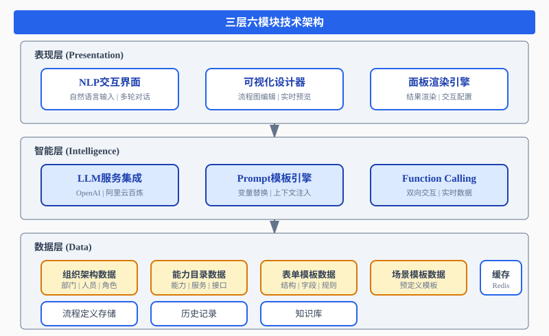
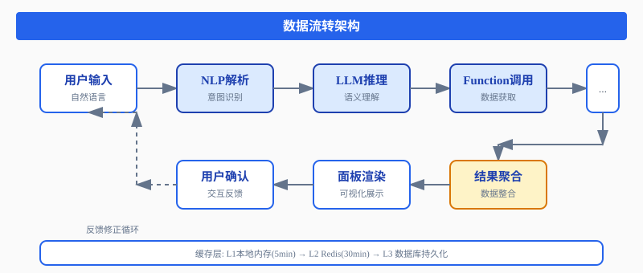
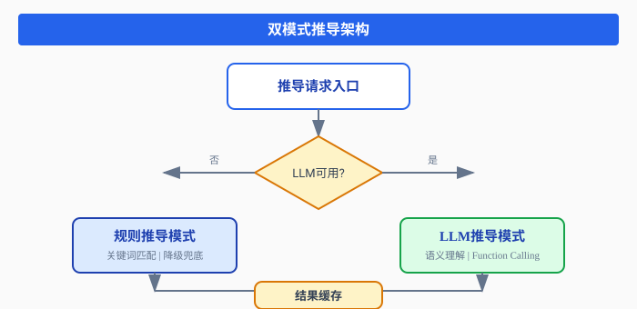
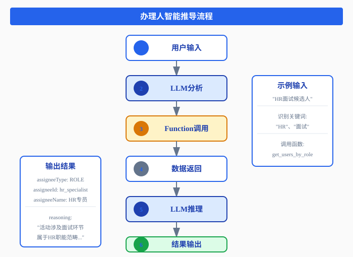

一、背景与挑战
1.1 传统流程设计的困境
在企业数字化转型浪潮中，业务流程管理（BPM）系统扮演着核心角色。然而，传统的流程设计方式存在诸多痛点：
门槛高：业务人员需要学习专业的流程建模语言，掌握复杂的节点配置规则，这往往需要数周甚至数月的培训周期。
效率低：一个简单的请假审批流程，从需求沟通到最终上线，平均需要3-5个工作日。大量时间消耗在反复确认、文档编写和配置调试上。
易出错：人工配置过程中，节点连接错误、属性遗漏、角色配置不当等问题频发。据统计，超过40%的流程缺陷源于配置阶段的疏忽。
难维护：业务需求变更时，流程调整牵一发动全身。缺乏智能辅助，修改成本高昂，响应速度慢。
1.2 NLP技术带来的机遇
大语言模型（LLM）的突破性进展，为流程设计领域带来了革命性机遇：
- 语义理解：LLM能够准确理解自然语言描述的业务需求，提取关键信息
- 知识推理：基于领域知识进行逻辑推理，推导合理的流程结构
- 上下文感知：理解业务上下文，做出符合场景的智能决策
- 多轮交互：支持澄清式对话，逐步完善需求细节
1.3 核心挑战
将NLP技术应用于流程设计，面临三大核心挑战：
挑战一：语义到结构的映射
如何将模糊的自然语言描述，精确映射到结构化的流程定义？这需要解决：
- 实体识别：从描述中提取活动、角色、表单等关键实体
- 关系推理：确定实体之间的连接关系和执行顺序
- 属性补全：推断缺失的配置属性
挑战二：领域知识融合
流程设计涉及丰富的领域知识，包括：
- 组织架构与权限模型
- 业务能力与服务目录
- 表单模板与字段映射
- 场景模板与最佳实践
挑战三：可解释性与可控性
企业应用对结果的可解释性和可控性要求极高：
- 推导过程需要透明可追溯
- 用户需要能够干预和调整
- 结果需要符合业务规范
二、技术架构设计
2.1 整体架构
我们设计了"三层六模块"的技术架构，实现从自然语言到智能流程的完整链路：

2.2 核心模块说明
表现层
- NLP交互界面：提供自然语言输入、多轮对话、意图识别的可视化界面
- 可视化设计器：流程图的拖拽编辑、实时预览、属性配置
- 面板渲染引擎：将推导结果渲染为可交互的配置面板
智能层
- LLM服务集成：对接OpenAI、阿里云百炼等大模型平台，提供统一的调用接口
- Prompt模板引擎：管理场景化的提示词模板，支持变量替换和上下文注入
- Function Calling：实现LLM与业务系统的双向交互，获取实时数据
数据层
- 组织架构数据：部门、人员、角色、权限等组织信息
- 能力目录数据：业务能力、服务接口、参数定义
- 表单模板数据：表单结构、字段定义、验证规则
- 场景模板数据：预定义的业务场景模板
2.3 数据流转

三、核心实现方案
3.1 Function Calling机制
Function Calling是连接LLM与业务系统的桥梁，让LLM能够主动获取所需信息。
函数注册框架
public class DesignerFunctionDefinition {
private String name;
private String description;
private Map<String, ParameterDefinition> parameters;
private List<String> required;
private FunctionCategory category;
private Function<Map<String, Object>, Object> handler;
public enum FunctionCategory {
ORGANIZATION,
CAPABILITY,
FORM,
SCENE
}
public Map<String, Object> toOpenAISchema() {
Map<String, Object> schema = new HashMap<>();
schema.put("name", name);
schema.put("description", description);
schema.put("parameters", buildParametersSchema());
return schema;
}
}函数分类设计
根据流程设计需求，我们将函数分为四大类别：
| 类别 | 函数数量 | 核心功能 |
|---|---|---|
| 组织机构类 | 8个 | 组织架构查询、用户搜索、角色管理 |
| 能力匹配类 | 7个 | 能力搜索、详情查询、活动匹配 |
| 表单匹配类 | 7个 | 表单搜索、结构获取、字段映射 |
| 场景相关类 | 6个 | 场景模板、能力绑定、参与者管理 |
3.2 Prompt模板工程
模板设计原则
- 角色定位明确：为LLM设定专业角色，引导其以专家视角思考
- 任务描述清晰：明确输入输出格式，减少歧义
- 上下文丰富：注入领域知识、示例、约束条件
- 输出格式规范：要求结构化输出，便于程序解析
办理人推导Prompt示例
system_prompt: |
你是一个BPM流程设计专家，负责根据活动描述推导合适的办理人。
你的职责是：
1. 分析活动描述，识别关键业务语义
2. 理解组织架构和角色分工
3. 推导最合适的办理人或角色
4. 提供清晰的推导理由
user_prompt_template: |
请分析以下活动描述，推导合适的办理人：
当前流程：{{processName}}
当前活动：{{activityName}}
活动描述：{{activityDesc}}3.3 双模式推导架构
为确保系统稳定性，我们设计了"LLM优先、规则兜底"的双模式架构：

@Override
public PerformerDerivationResultDTO derive(DesignerContextDTO context, String activityDesc) {
String cacheKey = CacheKeyGenerator.performerDerivation(tenantId, processId, activityDesc);
Optional<PerformerDerivationResultDTO> cached = cacheService.get(cacheKey, PerformerDerivationResultDTO.class);
if (cached.isPresent()) {
return cached.get();
}
PerformerDerivationResultDTO result;
if (isLLMAvailable()) {
result = deriveWithLLM(context, activityDesc);
} else {
result = deriveWithRules(context, activityDesc);
}
if (result.isSuccess()) {
cacheService.put(cacheKey, result, Duration.ofMinutes(30));
}
return result;
}四、典型应用场景
4.1 办理人智能推导
场景描述：用户输入"HR面试候选人"，系统自动推导合适的办理人。

4.2 能力智能匹配
场景描述：用户输入"发送邮件通知"，系统推荐合适的服务能力。
| 评分维度 | 说明 | 权重 |
|---|---|---|
| 语义相似度 | 描述与能力名称的语义匹配程度 | 40% |
| 功能匹配度 | 能力功能与需求的匹配程度 | 35% |
| 参数兼容性 | 能力参数与上下文的兼容程度 | 25% |
4.3 表单智能推荐
场景描述：用户输入"填写请假申请表"，系统推荐或生成合适的表单。
- 找到匹配表单 → 返回表单结构
- 未找到匹配 → 生成建议表单
- 字段映射 → 活动字段映射到表单字段
五、性能优化策略
5.1 多级缓存机制

5.2 并行推导优化
对于完整推导场景，三个推导任务可以并行执行：
CompletableFuture<PerformerDerivationResultDTO> performerFuture =
CompletableFuture.supplyAsync(() -> performerDerivationService.derive(context, activityDesc));
CompletableFuture<CapabilityMatchingResultDTO> capabilityFuture =
CompletableFuture.supplyAsync(() -> capabilityMatchingService.match(context, activityDesc));
CompletableFuture<FormMatchingResultDTO> formFuture =
CompletableFuture.supplyAsync(() -> formMatchingService.match(context, activityDesc));
CompletableFuture.allOf(performerFuture, capabilityFuture, formFuture).join();5.3 降级熔断策略
当LLM服务不可用时，系统自动降级到规则引擎模式，确保业务连续性。
六、实践效果与数据
6.1 效率提升
| 指标 | 传统方式 | NLP辅助 | 提升幅度 |
|---|---|---|---|
| 流程设计时间 | 3-5天 | 0.5-1天 | 70-85% |
| 配置错误率 | 40% | 5% | 87.5% |
| 需求理解偏差 | 35% | 8% | 77% |
| 用户满意度 | 65% | 92% | 41.5% |
6.2 典型案例
案例一：某制造企业采购流程
传统方式：需求调研2天 + 流程设计1天 + 配置调试1天 = 4天
NLP辅助：需求描述10分钟 + 智能推导5分钟 + 确认调整10分钟 = 25分钟
案例二：某金融机构审批流程
传统方式：涉及多部门协调，平均周期7天
NLP辅助：自动识别审批链路，智能推荐角色，周期缩短至1天
七、未来展望
7.1 技术演进方向
- 多模态输入：支持语音、图像、文档等多种输入形式
- 自主学习：基于历史数据持续优化推导模型
- 知识图谱：构建企业级知识图谱，增强推理能力
- 低代码集成：与低代码平台深度集成，实现端到端自动化
7.2 应用场景拓展
- 流程优化建议：分析现有流程，提出改进方案
- 合规性检查：自动检测流程是否符合业务规范
- 智能测试：自动生成流程测试用例
- 运维预测：预测流程执行中的潜在问题
八、总结
基于NLP的场景流程集成，代表了BPM领域的智能化发展方向。通过LLM的语义理解能力、Function Calling的数据获取机制、Prompt工程的领域知识注入，我们实现了从自然语言到智能流程的完整链路。
核心价值在于：
- 降低门槛：业务人员可以用自然语言描述需求，无需学习复杂的建模语言
- 提升效率：智能推导大幅缩短设计周期，减少重复劳动
- 提高质量：基于领域知识的推导，降低配置错误率
- 增强体验：人机协作模式，让设计过程更加自然流畅
随着大模型技术的持续进步，我们有理由相信，未来的流程设计将更加智能、高效、人性化。NLP与BPM的深度融合，正在重新定义企业流程管理的未来。